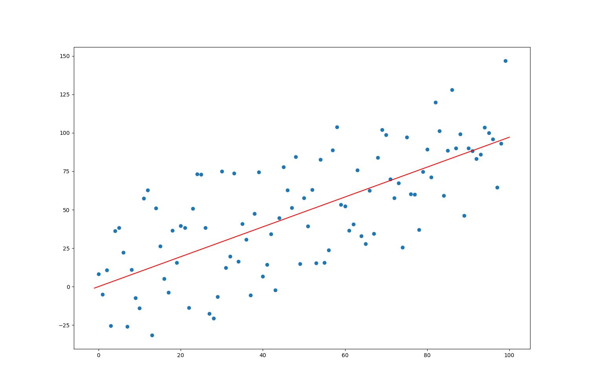

I have successfully implemented a linear regression algorithm from scratch using Python and Rust programming languages. The algorithm is built upon fundamental mathematical concepts and principles that are widely used in machine learning.
To compile rust lib:
cargo build --release
Run Python:
python main.py
Output:

#[no_mangle]
pub extern "C" fn f(arr: *const f64, length:usize) -> * const f64{
// get data from python
let slice = unsafe{std::slice::from_raw_parts(arr, length)};
// converting that data to x and y
let x = slice[..length/2].to_vec();
let y = slice[length/2..].to_vec();
// initializing the variables
let mut m = 0.0;
let mut c = 0.0;
const LR:f64 = 0.0001;
// println!("m:{}, c:{}, Loss: {}", m, c, loss(&y, &x, m, c));
let mut low_loss = loss(&y, &x, m, c);
let mut corret_m = 0.0;
let mut corret_c = 0.0;
// iteration
for _ in 0..100000 {
let mut temp_m = 0.0;
let mut temp_c = 0.0;
for i in 0..length/2 {
temp_m = x[i]*(y[i]-m*x[i]-c);
temp_c = y[i]-m*x[i]-c;
}
m -= LR * -2.0 * temp_m / (length as f64); // update m
c -= LR * -2.0 * temp_c / (length as f64); // update c
if low_loss > loss(&y, &x, m, c) {
low_loss = loss(&y, &x, m, c);
corret_m = m; // take the best m value
corret_c = c; // take the best c value
}
// println!("m:{}, c:{}, Loss: {}", m, c, loss(&y, &x, m, c));
}
// strore the values in vector
let v = vec![corret_m,corret_c];
let output = v.as_ptr();
std::mem::forget(v);
// return output as pointer f64
output
}
fn loss(y:&Vec<f64>, x:&Vec<f64>, m:f64, c:f64) -> f64 {
let mut l = 0.0;
for i in 0..y.len() {
l += (y[i] - m*x[i] - c).powi(2);
}
l / (y.len() as f64)
}
from ctypes import *
import random
import numpy as np
# random.seed(0)
clib = CDLL("./target/release/liblinear_regression1.so")
clib.f.argtypes = [POINTER(c_double), c_int]
clib.f.restype = POINTER(c_double)
def random_points(m:int or float, c:int or float, d:tuple, n:int):
y = lambda x: m * x + c + random.uniform(d[0], d[1])
x_list = list(range(n))
y_list = list(map(y, x_list))
return x_list, y_list
def rustLr(x, y):
combined_list = x + y
l = ( c_double * len(combined_list) )(*combined_list)
result = clib.f(l, len(combined_list))
return result[0], result[1]
import matplotlib.pyplot as plt
from linear_reg import random_points, rustLr
import random
random.seed(10)
# import numpy as np
x, y = random_points(1, 1, (-50, 50), 100)
m, c = rustLr(x, y)
x1 = list(range(int(min(x))-1, int(max(x))+2))
y1 = [m*i+c for i in x1]
# k, d = np.polyfit(x, y, 1)
# x2 = x1
# y2 = [k*i+d for i in x1]
plt.subplots(figsize=(15,10))
plt.plot(x, y, 'o')
plt.plot(x1, y1, color='red')
# plt.plot(x2, y2, color='green')
plt.savefig('graph.jpg')
plt.close()